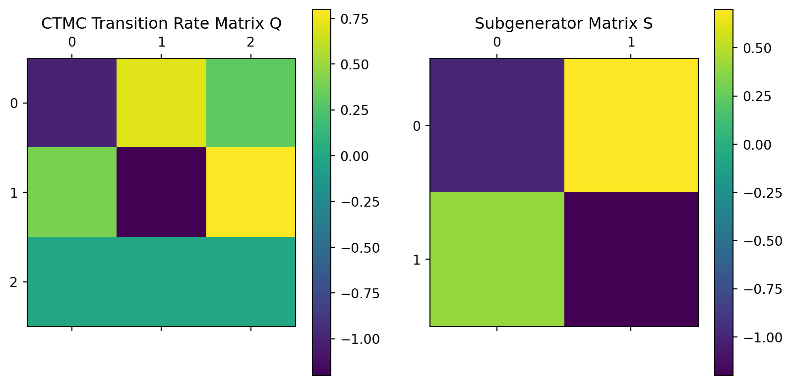

# Define basic parameters
mean_service_time = 15 # average service time in minutes
variance_service_time = 5 # variance of service time
no_show_probability = 0.1 # probability of a no-show
walk_in_probability = 0.05 # probability of a walk-in2024-05-02
This tutorial covers the core concepts from the article by Kuiper et al. (2023) in a structured and understandable way, suitable for students with a mathematical background. The Python code provided offers a practical illustration of how to implement these concepts in real-world scenarios.
Introduction
Appointment scheduling in healthcare is crucial for managing the variability and unpredictability in service duration and patient arrivals. Effective scheduling strategies can significantly reduce waiting times for patients and idle times for healthcare providers, thereby improving service quality and cost-efficiency.
This tutorial will guide you through a systematic approach for setting up appointment schedules using a novel strategy that handles these variabilities efficiently.
Step 1: Understanding the Problem
The core of the scheduling problem involves dealing with the randomness of service times and patient attendance, such as no-shows and walk-ins. These factors introduce variability that the scheduling system must accommodate to optimize both the provider’s and the patients’ time.
Python Example: Basic Parameters Setup
Step 2: The Scheduling Model
We utilize a phase-type distribution to approximate the service times, which simplifies the calculation of expected waiting and idle times. This approximation is both analytically tractable and accurate.
Phase-type distributions are a versatile class of distributions used extensively in stochastic modeling, particularly in areas such as queueing theory, reliability engineering, and healthcare modeling. These distributions are defined as the distribution of the time until absorption in a Markov process with one absorbing state and one or more transient states. Essentially, they are the time it takes for a Markov process to reach an absorbing state starting from a transient state.
Characteristics of Phase-Type Distributions
- Flexibility: Phase-type distributions can approximate virtually any positive-valued distribution to an arbitrary level of accuracy.
- Analytical Tractability: They often lead to simpler analytical forms for performance metrics in stochastic models, which can be particularly beneficial in complex systems like networks of queues or systems with server failures.
- Composition: They are typically represented by a mixture or a convolution of exponential distributions, which are defined by a generator matrix of the underlying Markov process and an initial probability vector.
Here’s a structured outline for a tutorial on Phase-Type Distributions suitable for an undergraduate student with math skills. The tutorial will be structured to first introduce the concept, delve into the characteristics and examples, and then demonstrate how to simulate and use these distributions with Python.
Tutorial Outline: Understanding Phase-Type Distributions
- Introduction to Phase-Type Distributions
- Definition
- Importance in stochastic modeling
- Mathematical Foundations
- Subgenerator Matrix ()
- Initial Distribution ()
- Absorbing states and transient states
- Characteristics of Phase-Type Distributions
- Versatility and Flexibility
- Density Property
- Special Cases of Phase-Type Distributions
- Exponential Distribution
- Erlang Distribution
- Hyperexponential Distribution
- Simulating Phase-Type Distributions with Python
- Generating Exponential Distributions
- Generating Erlang Distributions
- Generating Hyperexponential Distributions
- Applications in Real-world Scenarios
- Queueing Theory
- Reliability Engineering
- Conclusion
- Recap of key points
- Further reading and resources
Detailed Tutorial
1. Introduction to Phase-Type Distributions
A phase-type distribution is used to describe the time it takes for a Markov chain to reach an absorbing state from a transient state. The Markov chain consists of one or more transient states and one absorbing state. The time spent in each transient state can be exponentially distributed, and the chain moves from one state to another based on probabilities defined by a transition rate matrix, known as the subgenerator matrix ().
Example: A Simple Markov Model
Let’s consider a simple example where a system can be in one of three states before it fails (the absorbing state):
- State 1 and State 2: These are transient states where the system is operational but in different modes of operation.
- State 3: This is the absorbing state representing system failure.
The transition rates between these states are defined in the subgenerator matrix (), and the initial probabilities of being in each state are given in vector ().
Transition Rate Matrix (()) and Initial Distribution (()):
- The matrix () could look like this for a system with three states (two transient and one absorbing):
]
- ( = [1, 0]) meaning the process starts from State 1.
Here, the negative diagonal elements (-0.5) and (-0.8) in () represent the rate of leaving the current states, and the off-diagonal positive elements represent the rate of moving to the other state.
Python Simulation of the Markov Process
We can simulate this Markov process to observe how long it takes on average to reach the absorbing state. We’ll use the numpy and matplotlib libraries for simulation and visualization.
Python Code for the Simulation
import numpy as np
import matplotlib.pyplot as plt
def simulate_markov_process(S, alpha, num_steps=1000):
states = [0] # Start in state 0 as per alpha
times = [0] # List to record times
current_time = 0
while len(states) < num_steps + 1:
current_state = states[-1]
if current_state == 2: # Check if state is absorbing
break
rate = -S[current_state, current_state]
time_to_next_state = np.random.exponential(1 / rate)
current_time += time_to_next_state
times.append(current_time)
# Calculate transition probabilities to next state
transition_probabilities = S[current_state, :] / rate
transition_probabilities = np.clip(transition_probabilities, 0, 1)
next_state = np.random.choice([0, 1, 2], p=transition_probabilities)
states.append(next_state)
return times, states
# Define S matrix
S = np.array([[-0.5, 0.5, 0],
[0.3, -0.8, 0.5],
[0, 0, 0]])
# Initial probability vector alpha
alpha = [1, 0]
# Simulate the Markov process
times, states = simulate_markov_process(S, alpha, num_steps=1000)
# Plot the results
plt.figure(figsize=(10, 6))
plt.step(times, states, where='post')
plt.xlabel('Time')
plt.ylabel('State')
plt.title('Markov Process Simulation - Time Until Absorption')
plt.yticks([0, 1, 2], ['State 1', 'State 2', 'Absorbing State'])
plt.show()
Explanation of the Code
- Simulation Function: This function simulates the Markov process based on the subgenerator matrix () and the initial state distribution (). It uses exponential distributions to determine the time spent in each state before transitioning to the next.
- Plotting: The
matplotliblibrary is used to visualize how the state changes over time and how long it takes to reach the absorbing state.
This example helps illustrate how a phase-type distribution can model real-world processes by simulating the time until
an event (like system failure) occurs, considering various operational states and transition rates between them.
2. Mathematical Foundations
- Subgenerator Matrix (): Governs transitions between states; non-diagonal elements are non-negative (rates), diagonal elements ensure row sums are non-positive.
- Initial Distribution (): Probability vector for starting states.
- States: Distinction between absorbing and transient states.
3. Characteristics of Phase-Type Distributions
- Versatility and Flexibility: Can model virtually any positive-valued distribution.
- Density Property: They are dense in the field of all positive-valued distributions, meaning they can approximate any such distribution arbitrarily closely.
4. Special Cases of Phase-Type Distributions
- Exponential Distribution: Represents the simplest case with a single transient state.
- Erlang Distribution: Represents the time taken for exactly (k) events to occur in a Poisson process.
- Hyperexponential Distribution: Suitable for modeling processes with multiple exponential phases that are not necessarily sequential.
5. Simulating Phase-Type Distributions with Python
- Generating Exponential Distributions:
import numpy as np
# Generate exponential data
def exponential_data(rate, size=1000):
return np.random.exponential(1/rate, size)
# Plotting
import matplotlib.pyplot as plt
data = exponential_data(1.5)
plt.hist(data, bins=30, alpha=0.75)
plt.title('Exponential Distribution')
plt.xlabel('Time')
plt.ylabel('Frequency')
plt.show()
- Generating Erlang Distributions:
# Generate Erlang distribution
def erlang_distribution(k, rate, size=1000):
return np.random.gamma(shape=k, scale=1/rate, size=size)
data = erlang_distribution(3, 1.5)
plt.hist(data, bins=30, alpha=0.75)
plt.title('Erlang Distribution')
plt.xlabel('Time')
plt.ylabel('Frequency')
plt.show()
- Generating Hyperexponential Distributions:
def hyperexponential_distribution(rates, probs, size=1000):
components = np.random.choice(len(rates), size=size, p=probs)
return np.array([np.random.exponential(1/rates[i]) for i in components])
data = hyperexponential_distribution([1.5, 3], [0.4, 0.6])
plt.hist(data, bins=30, alpha=0.75)
plt.title('Hyperexponential Distribution')
plt.xlabel('Time')
plt.ylabel('Frequency')
plt.show()
6. Applications in Real-world Scenarios
- Queueing Theory: Managing customer service systems.
- Reliability Engineering: Estimating lifetimes of systems and components.
7. Conclusion
- Recap of key points: Summarize the versatility and applications of phase-type distributions.
- Further reading and resources: Provide links to more detailed texts and research articles.
This tutorial format will help undergraduate students grasp the concept of phase-type distributions effectively,
Common Examples
Exponential Distribution: The simplest phase-type distribution, where there is only one transient state that leads to an absorbing state after an exponentially distributed time. It is often used to model the time between events in a Poisson process.
Erlang Distribution: A sum of (k) independent exponential distributions with the same rate (), which is a special case of a phase-type distribution with (k) stages. This can model multiple processes that must occur sequentially, each taking an exponentially distributed time.
Hypexponential Distribution: A mixture of exponential distributions, which can model processes where there are several different ‘paths’ each with its own exponential time characteristic, but only one path is taken (chosen according to some probability).
Example: Erlang and Hypexponential Distributions
Let’s illustrate these concepts with Python code examples. We’ll use the numpy and scipy libraries for generating random numbers and plotting.
Python Code
import numpy as np
import matplotlib.pyplot as plt
from scipy.stats import expon
# Function to generate Erlang distribution data
def erlang_distribution(k, lambda_, size=1000):
return np.sum(np.random.exponential(1/lambda_, (size, k)), axis=1)
# Function to generate Hypexponential distribution data
def hypexponential_distribution(rates, probabilities, size=1000):
assert len(rates) == len(probabilities) and np.isclose(np.sum(probabilities), 1)
choices = np.random.choice(len(rates), size=size, p=probabilities)
return np.random.exponential(1 / np.array(rates)[choices], size=size)
# Parameters
k = 3 # Number of stages for Erlang
lambda_ = 1.5 # Rate parameter for both distributions
hyp_rates = [1.0, 2.0] # Different rates for Hypexponential
hyp_probs = [0.5, 0.5] # Probabilities for choosing each rate
# Generate data
erlang_data = erlang_distribution(k, lambda_)
hypexponential_data = hypexponential_distribution(hyp_rates, hyp_probs)
# Plotting
plt.figure(figsize=(10, 6))
plt.hist(erlang_data, bins=30, alpha=0.6, label='Erlang Distribution')
plt.hist(hypexponential_data, bins=30, alpha=0.6, label='Hypexponential Distribution')
plt.title('Comparison of Erlang and Hypexponential Distributions')
plt.xlabel('Time')
plt.ylabel('Frequency')
plt.legend()
plt.show()
Explanation
- Erlang Distribution: This is generated by summing (k) exponential variables. It models scenarios where (k) independent events each take exponentially distributed times with the same rate ().
- Hypexponential Distribution: Generated by choosing one of several exponential distributions based on a set of probabilities. It models scenarios with multiple potential phases, each exponentially distributed but with different rates.
These distributions and their Python implementations showcase how phase-type distributions can be used to model various real-world processes where times until events are crucial. They offer great flexibility and analytical tractability, making them powerful tools in stochastic modeling.
import numpy as np
# Define the phase-type distribution parameters
def phase_type_distribution(mean, variance):
# Placeholder for actual phase-type distribution calculation
# Typically, this would involve more complex statistical modeling
return np.random.gamma(shape=mean**2 / variance, scale=variance / mean, size=1000)
# Generate service times
service_times = phase_type_distribution(mean_service_time, variance_service_time)Step 3: Incorporating Variability
Adjust the model to include variability due to no-shows and walk-ins. This adjustment is crucial for realistic scheduling that accommodates daily operational uncertainties.
Python Example: Adjusting for No-shows and Walk-ins
def adjust_for_variability(service_times, no_show_prob, walk_in_prob):
# Apply no-show probability
service_times = service_times * np.random.binomial(1, 1 - no_show_prob, size=service_times.shape)
# Simulate walk-ins by adding extra service times
walk_ins = phase_type_distribution(mean_service_time, variance_service_time)
walk_in_occurrences = np.random.binomial(1, walk_in_prob, size=service_times.shape)
adjusted_service_times = np.where(walk_in_occurrences, service_times + walk_ins, service_times)
return adjusted_service_times
# Adjust service times for variability
adjusted_service_times = adjust_for_variability(service_times, no_show_probability, walk_in_probability)Step 4: Optimization and Scheduling
Finally, the adjusted service times are used to generate an optimal schedule that balances waiting and idle times according to a chosen objective function. This function aims to minimize a weighted sum of these times.
Python Example: Optimization Using Scipy
from scipy.optimize import minimize
# Define the objective function to minimize total time
def objective(x):
# This is a simplification; in practice, you would use the adjusted service times
waiting_time = sum(x)
idle_time = len(x) * mean_service_time - waiting_time
return waiting_time * 0.5 + idle_time * 0.5 # Example weights
# Initial guess for the optimization
initial_guess = np.full((10,), mean_service_time) # Assume 10 appointments
# Perform the optimization
result = minimize(objective, initial_guess, method='SLSQP')
print("Optimized schedule:", result.x)Optimized schedule: [15. 15. 15. 15. 15. 15. 15. 15. 15. 15.]Conclusion
By applying these steps, healthcare facilities can create flexible and robust appointment schedules that effectively manage the inherent variability in healthcare operations, improving both efficiency and patient satisfaction.
References
Kuiper, Alex, Michel Mandjes, Jeroen de Mast, and Ruben Brokkelkamp. 2023. “A Flexible and Optimal Approach for Appointment Scheduling in Healthcare.” Decision Sciences 54 (1): 85–100. https://doi.org/https://doi.org/10.1111/deci.12517.